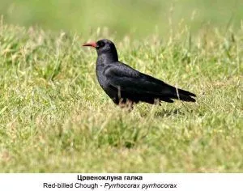
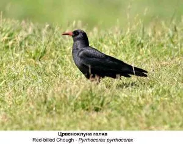

The National Park Pelister was proclaimed by a law enacted by the Presidium of the People's Republic of Macedonia on November 30, 1948. In December 2007, by a special law, part of Mount Baba with its peak Pelister was once again declared a national park. According to the Law on Nature Protection, the Public Institution National Park Pelister - Bitola is responsible for the protection and management of the park.
Mount Baba, with its peak Pelister, is located in the southern part of the Republic of Macedonia and boasts alpine characteristics. Pelister is nestled between the valleys of Pelagonia and Prespa. It is approximately 465 million years old and is the highest peak in the park, standing at 2,601 meters above sea level.
There are two legends associated with the name Pelister. Some claim that the name originates from the Greek word "peristeri," meaning dove, due to the white-grayish limestone, which resembles a dove when viewed from a distance. Others believe it is because of the five-needle pine - "petlister" (five needles - five leaves), hence Pelister.


 
